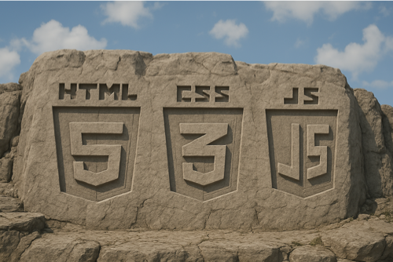
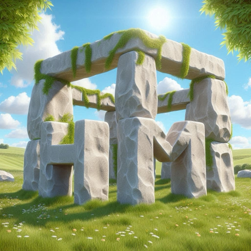

Create an image that has HTML, CSS, and JavaScript logos carved into stone similar to Mount Rushmore. There should be no presidents just the logo of HTML, CSS, and JavaScript.
Generated using ChatGPT
Create an image of a robot coding up a todo list in html.
Generated using ChatGPT
HTML spelled out in stone. It should look similar to Stonehenge.
Generated using Bing Image Creator